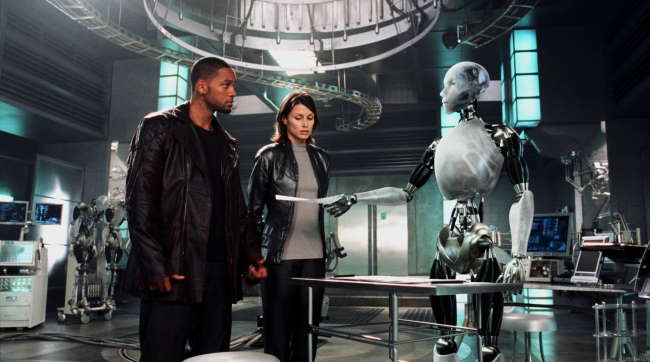

The main goal of web 1.0 was to help users find information
Considered a read-only website, also referred to as a static website.
Offered little no user interaction
Very few images (slower internet speed and lower resolutions)
No content creation and No commenting
Designed to be consumed only
Web 2.0 -
"Allows user-generated content to be viewed by millions of peopl all over the world in a matter of seconds."
Dynamic websites
interactivity
Social Connectivity
User-generated Content
The emergence of applications, self publishing platforms, and social media platforms like Facebook & Youtube marked the birth of web 2.0.
Web 3.0 - semantic web
Web 3.0 will focus on Web interaction, now processing data and information based on users' needs. Here is a list of some
qualities web 3.0 will posses.
Decentralization:
Since web 3.0 allows information to be retrieved based on its content, it can be kept in several locations at the same time; there is no fixed location.
Decentraliztion offers the ability to obtain desired data from more than one primary location.
Decentralized data networks allow different data generators to sell or exchange their data without losing ownership,
jeopardizing privacy, or relying on middlemen.
Users will retain more control over their data and the means to do so.
For example, almost everything you do online is tracked and monitored. When you check your Facebook feed Facebook
tracks what you look at, how long you look at it, and what you like. They then use this information to better
target advertisements to you.
AI and Machine Learning:
Through technologies based on semantic web ideas and natural language processing, machines will be able to understand the
information in the same way that people do.

Machinge Learning is a branch of aritificial intelligence that combines data and algorithms to mimic how humans
learn while continuing to improve accuracy.
These results will allow computers to provide faster and more relevant results in a variety of sectors, such as medication
research and novel material, as opposed to the current focus on product advertising.
Trustless and Permisionless:
Allows users to engage directly without going through a trusted middle man.
It will also be permissionless. There will be no governing body from which a user would
need to gain authorization from.